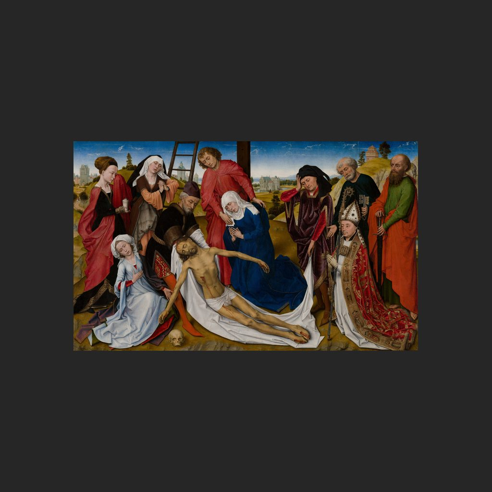

基督哀歌
罗希尔·范德魏登 · 约1460—1464年
The Lamentation of Christ
讲解节选
画中，耶稣基督死后刚从十字架上被取下，母亲玛丽亚跪在他身旁，哭着哀悼自己的儿子。
这是一幅祭坛画，通常归于罗希尔·范德魏登，但作坊助手也参与制作；创作年代约在一四六零至一四六四年间，具体仍有疑问。
— 普通话讲稿 · Artvery
完整讲解约 2 分钟，在 Artvery App 里收听。粤语、台湾普通话、内地普通话三种语音，馆内对准作品即可识别播放。
即将上架 App Store
App 即将上架，敬请期待。上架后免费下载，每座博物馆单独购买，一次购买永久使用。
作品信息
- 作者
- 罗希尔·范德魏登
- 年代
- 约1460—1464年
- 所在
- 莫瑞泰斯皇家美术馆 · 佛兰德斯与早期尼德兰绘画
- 馆藏编号
- 264
莫瑞泰斯皇家美术馆参观攻略：必看名作和路线 · 莫瑞泰斯皇家美术馆中文语音导览